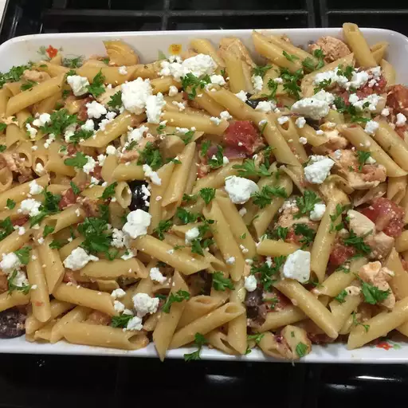

Greek Penne and Chicken

Description
Creamy and flavorful
Ingredients
- 1 (16 oz) package penne pasta
- 1 1/2 tablespoons butter
- 1/2 cup chopped red onion
- 2 cloves garlic, minced
- 1 lb skinless, boneless chicken breast halves-cut into bite-size pieces
- 1 (14 oz) can artichoke hearts in water
- 1 tomato, chopped
- 1/2 cup crumbled feta cheese
- 3 tablespoons chopped fresh parsley
- 2 tablespoons lemon juice
- 1 teaspoon dried oregano
- ground black pepper to taste
Steps
- In a large pot with boiling salted water, cook penne pasta until al dente. Drain.
- Meanwhile, in a large skillet over medium-heat, melt butter, add onion and garlic
and cook for 2 minutes. Add chopped chicken and continue cooking, stirring,
occasionally until golden brown, about 5 to 6 minutes.
- Reduce heat to medium-low. Drain and chop artichoke hearts and add them,
chopped tomato, feta cheese, fresh parsely, lemon juice, dried oregano, and
drained penne pasta to the large skillet. Cook until heated through, about 2 to 3
minutes.
- Season with salt and ground black pepper. Serve warm